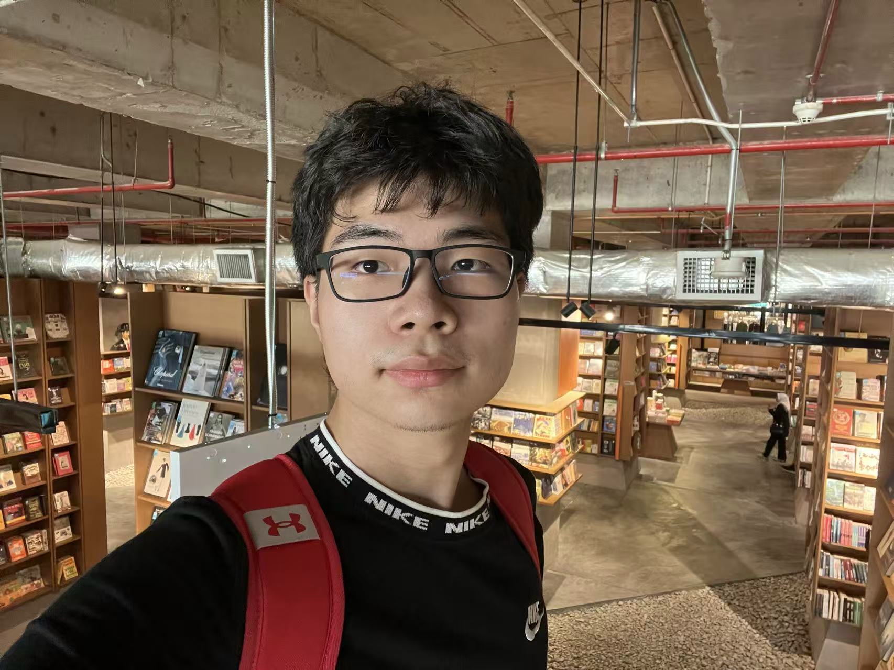

A mind for systems.
A love of games.
Connecting my computer science background with the medium I love.

GAME ENGINEERING ✳
Building my way
into game engineering.
My studies in Computer Science and Technology at Xiamen University Malaysia have given me a foundation in mathematics, algorithms, and computer systems. I’m building on that foundation through game projects that connect engineering with my love of games.
I’m particularly interested in game AI: characters that respond to player behaviour and help shape how a game unfolds. Through postgraduate study in game engineering, I want to explore richer character behaviour that remains practical across different devices and computing budgets.
GitHub / UluruMaoXiamen University Malaysia
What I want to explore.
Characters with more agency.
How can game characters respond dynamically to players and contribute to the game’s progression?
AI that fits the game.
How can richer decision-making work within realistic latency, hardware, and deployment-cost constraints?
Behaviour I can examine.
My current projects use inspectors, fixed scenarios, and tests to connect an AI decision with what actually happens in play.
A foundation I’m building on.
Languages & engines used in these projects
Current project interests
Some projects extend coursework or tutorials and use AI assistance. Each project page explains my contribution and credits the support and assets used.